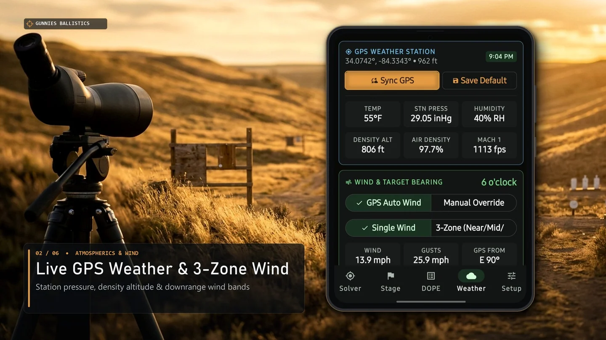
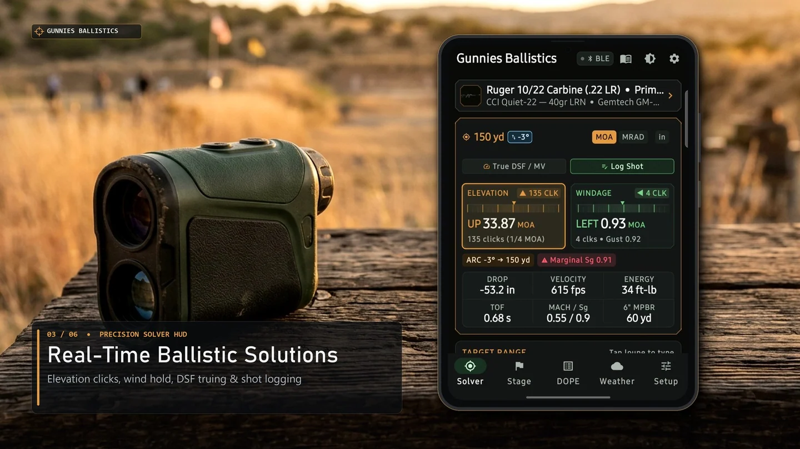
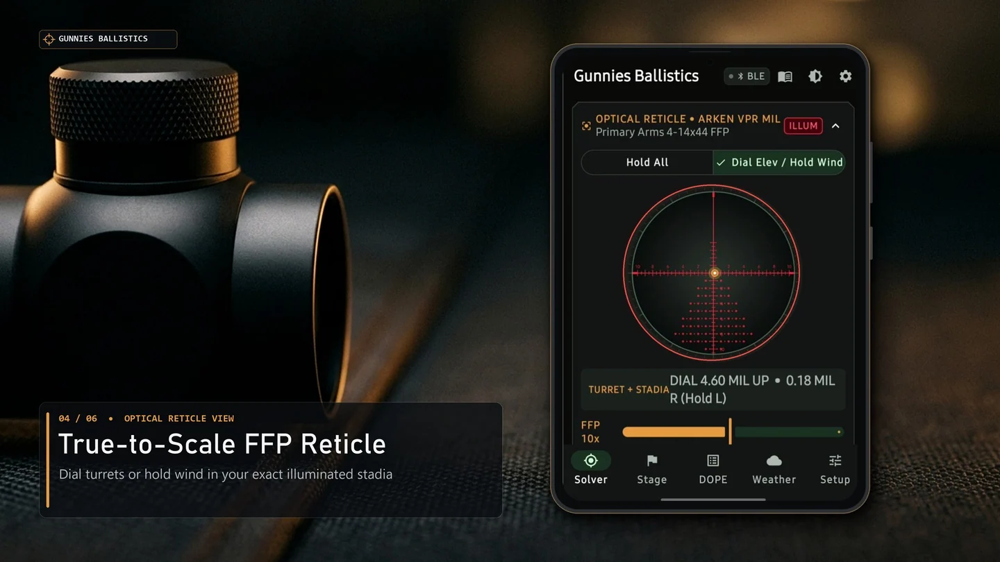
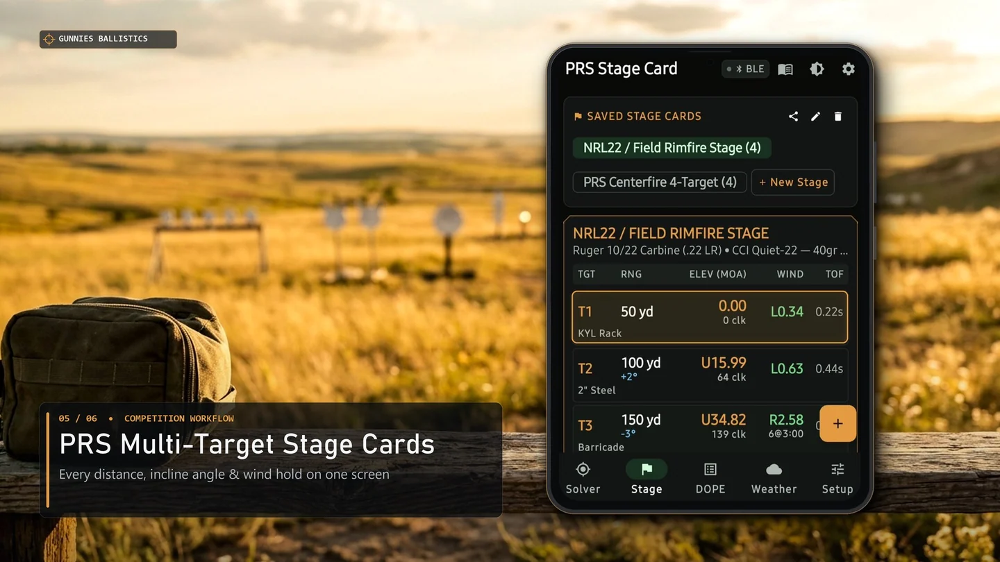
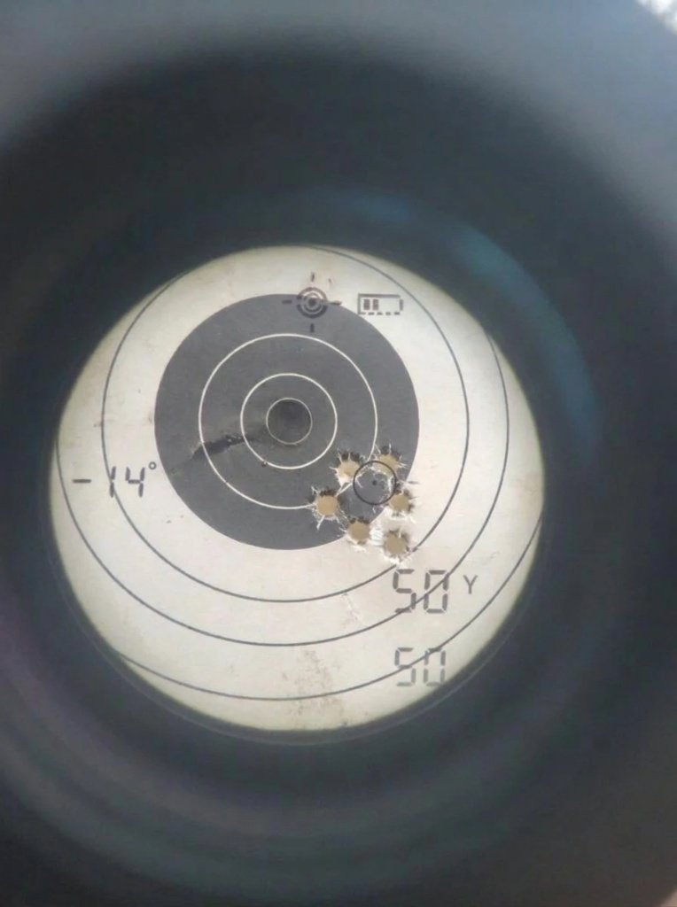

01 / 06 • 0:00
01 / 06 • 0:00
Arsenal Setup
Combine independent Guns, Scopes, Ammo, and Suppressors profiles with Favorites and a 379-item built-in database (115 firearms, 86 scopes, 114 ammo loads, 64 suppressors).
ANDROID 3-DOF+ BALLISTICS SOLVER
Real-time elevation and windage solutions, 379 built-in gun, scope, ammo, and suppressor profiles, 3-zone wind banding, 7 scope-matched reticles, and 10-target PRS stage cards—running offline on Android 8.0+ with optional GPS weather sync.
01 // INSIDE THE APP
Inspect any real screen up close or jump the walkthrough video straight to that timestamp.
01 / 06 • 0:00
Combine independent Guns, Scopes, Ammo, and Suppressors profiles with Favorites and a 379-item built-in database (115 firearms, 86 scopes, 114 ammo loads, 64 suppressors).

02 / 06 • 0:09Tap Sync GPS (requires GPS + internet) to fetch live temperature, humidity, station pressure, wind, and gusts, or enter weather manually offline and switch between Single Wind and 3-Zone Wind.

03 / 06 • 0:19Real-time elevation and windage clicks, gust bracket, moving target lead, stability factor (Sg), phone inclinometer angle lock, two-stage MV/DSF truing, and one-tap cold-bore shot logging.

04 / 06 • 0:29Choose from 7 scope-matched reticles (3 FFP Christmas-tree/grid designs plus 4 SFP/optic reticles), toggle Hold All vs. Dial Elevation / Hold Wind, and overlay 6", 10", or 18" target plates.

05 / 06 • 0:37Save and reorder custom match or field stages with up to 10 targets per card—each with independent distance, inclination angle, wind override, mover speed, clicks, and time of flight.
 06 / 06 • 0:45
06 / 06 • 0:45
Generate drop tables in 10, 25, 50, or 100-yard/meter steps (presets up to 800 for short-range loads or 1,500 for centerfire), inspect the trajectory chart and 6" MPBR, and share as plain text.
02 // VERIFIED CAPABILITIES
Every feature below reflects what is implemented and tested in the current Gunnies Ballistics Android app.
Enter a single BC or up to 5 velocity-to-BC bands per load. The solver blends smoothly over ±20 fps across velocity thresholds as the bullet slows downrange.
Stage 1 solves for true Muzzle Velocity from supersonic observed drop; Stage 2 locks MV and calibrates Drop Scale Factor (DSF) at Mach ≤ 1.20 across up to 6 Mach nodes.
Run Single Wind or split terrain winds into Near (0–33%), Mid (33–66%), and Far (66–100%) zones, plus Wind Gust Bracket and moving target lead. Core calculations run offline; GPS weather sync requires location + internet.
Lock uphill/downhill shooting angles (±60°) using your phone's rotation/accelerometer sensor or enter angles manually, switch Field Dark / Night Red / Daylight themes, and keep the screen awake on the line.
Log cold-bore and session shots with weather snapshots and predicted vs. actual holds. Export or restore your entire arsenal, stage cards, logs, and settings as a versioned JSON file (Merge or Overwrite).
Works completely standalone with no external gear. If you own a Bushnell Bone Collector 1800 (LBC1800) Bluetooth rangefinder, Gunnies can sync your active rig & weather and ingest live laser range/angle pings.
03 // BALLISTIC MODEL TRANSPARENCY
Clear documentation of the physics implemented in the app—what inputs it uses, when each correction applies, and known limitations. You can also read this summary in-app under Settings → About & Ballistic Model.
The core solver integrates three translational degrees of freedom—downrange distance, vertical drop, and lateral drift—using 4th-order Runge-Kutta (RK4) math at fixed 0.001-second (1 ms) steps in a line-of-sight tilted coordinate frame, interpolating cleanly onto exact target distances.
The "+" means Gunnies layers rotational, Earth-frame, and calibration effects on top of the 3-DOF point-mass trajectory: Coriolis (integrated inside RK4 when GPS latitude is available), empirical Spin Drift and Aerodynamic Jump, stepped Multi-BC velocity bands, and Drop Scale Factor (DSF)—rather than simulating a full 6-DOF rigid-body pitch and yaw model.
04 // SAMPLE DOPE OUTPUT
Ruger 10/22 Carbine • CCI Quiet-22 (40 gr LRN) • 50 yd Zero • 55°F / 29.05 inHg (806 ft DA) • Wind 13.9 mph @ 6:00.
| Range (yd) | Elevation (MOA) | Clicks | Wind (MOA) | Velocity (fps) | TOF (s) |
|---|
05 // RANGEFINDER + APP WORKFLOW
Gunnies Ballistics works 100% standalone, and pairs seamlessly with the optional Bushnell Bone Collector 1800 rangefinder so your in-lens display and phone HUD stay in lockstep.

-14° angle, 50 Y LOS range, and 50 ARC horizontal distance (switches to holdover at 100–800 yd).-14°): Incline or declination angle relative to level ground.50 Y): Line-of-Sight (LOS) distance directly to the target.50): True horizontal ARC distance inside 100 yards. At 100–800 yards, this switches automatically to your onboard ballistic holdover (MOA or MRAD).06 // INSTALL & UPDATE ON ANDROID
Compatible with Android 8.0+ smartphones, tablets, and adaptive dual-pane foldables. Download the latest APK directly from GitHub Releases—no account or subscription required.
Signing transparency: Releases named *-release.apk are verified release-signed builds; pre-releases named *-debug.apk are debug-signed test builds until release signing keys are configured.
.apk file..apk.*-release.apk—Android upgrades in place and preserves your saved profiles, truing data, stage cards, and logs..apk, and tap Import (.json).